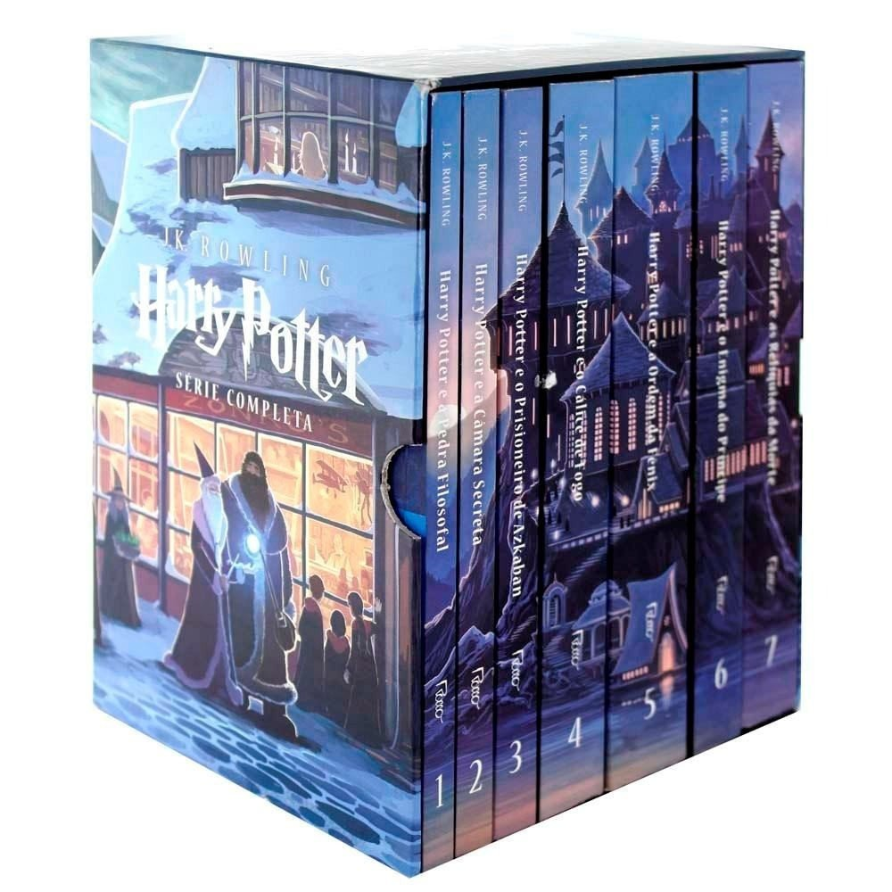

Livros mais Famosos
Genêro
Foto
Livro
Autor



Livros mais Famosos | |||
|---|---|---|---|
Genêro |
Foto |
Livro |
Autor |
| Ficção/Fantasia |
 |
Harry Potter | J.K. Rowling |
|
|
1984 | George Orwell | |
| Romance |
|
Orgulho e Preconceito | Jane Austen |
|
|
O Morro dos Ventos Uivantes | Emily Bronte | |
| Desenvolvimento pessoal |
|
Como fazer Amigos e Influenciar Pessoas | Dale Carnegie |
|
|
As armas da Persuasão | Robert Cialdini | |
| Negócios | Investidor Inteligente | Benjamin Graham | |
|
|
Pai Rico, Pai Pobre | Robert Kiyosaki | |